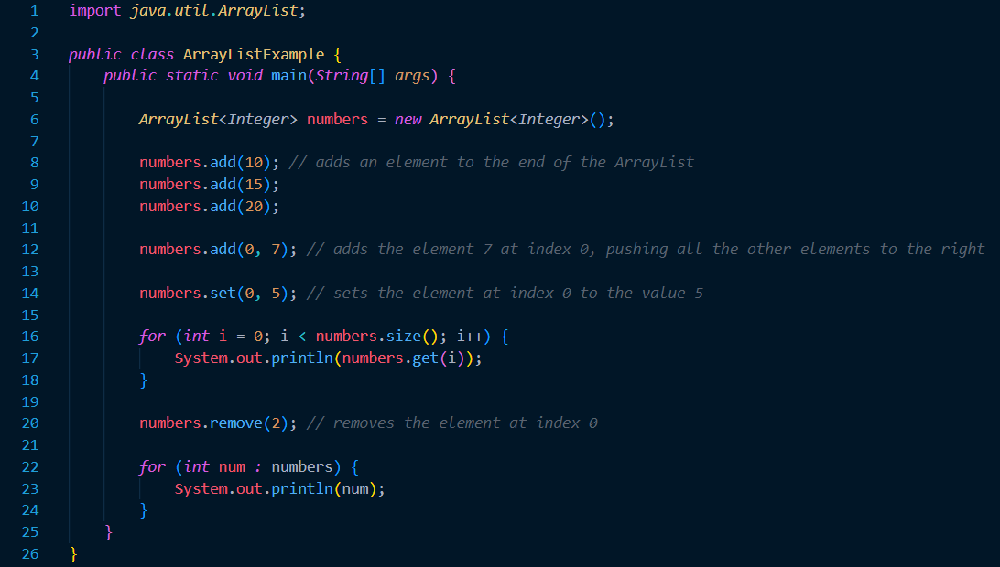

Arraylists
Prerequisite Knowledge and Terms
Arraylists are extremely simlar to arrays. Thus if you are familiar with arrays, learning about arraylists should be relatively easy. If you are unfamiliar with arrays, make sure you are familiar with the following concepts:- A basic understanding of variables, primitive data types and objects.
- Familiarity with forms of iteration such as 'for loops' and 'while loops.'
- Element: A specific value inside an array.
- Index: A 0 based positioning system that determines the positions of specific elements inside an array.
- Array length: the number of elements inside the array. Once the array length is determined, it cannot be changed.
Introduction
An ArrayList is a re-sizable array or otherwise known as a dynamic array. It increases in size when elements are added to it, and decreases in size when elements are removed from it. It serves the same purpose as a regular array and allows you to access its elements by their index.There are few main differences between ArrayLists and arrays:
| Arrays | ArrayLists |
|---|---|
| An arrays length cannot be resized after having been created; Its length is final. | ArrayLists will automatically resize as new elements are added or removed. |
| Arrays do not require any import statements unless its elements require import statements. | ArrayLists require java.util.ArrayList to be imported in order to be used. |
| Arrays can be constructed to hold either primatives or object references. | ArrayList instances can hold only object references, not primatives. Primative reference data such as int, char, boolean and double are to be replaced with wrapper classes such as Integer, Character, Boolean and Double box types respectively. |
| Arrays can be declared for only one type of element. I.e, an array is declared to hold strings, you cannot store an integer in it. | An ArrayList can hold a mixture collection of objects if desired to. I.e, an ArrayList can hold an Integer, String, Boolean, and another Integer. This form of using ArrayLists is not recommended. However, it is a fully valid way of using the class. |
ArrayList Example
Let's take a look at the program below. As we can see, ArrayLists have very few differences compared to Arrays. However, a notable difference is the usage of object refrences only. As mentioned before, ArrayLists can only hold objects as elements. Thus, as the developer, we have to use techniques called autoboxing and autounboxing to be able to hold primative data references in the ArrayList. Autoboxing is the process of converting a primative data type to its respective wrapper class. I.e, converting an `int` into an `Integer` (like in the exapmle below). Autounboxing is converting a wrapper class into its respective primative data type. I.e, converting an `Integeri into an `int.` Autoboxing and autounboxing are techniques that are implemented automatically when working with ArrayLists.
Traversing ArrayLists are the exact same as a travering an Array. As mentioned in the other tutorial, the two most common ways of traversing an array is the `for loop` and the `for each loop.` Both of these techniques are implemented in the code above and work the exact same way with ArrayLists. To add on, similar to arrays, ArrayLists and also be 2 dimensional; they work the exact same way as arrays.
Additional Takeaways
- Similar to arrays, be careful about throwing the ArrayIndexOutOfBoundsException.
- The range of an ArrayList starts from 0, all the way arrList.size() - 1 (inclusive).
- Unlike arrays, you cannot access the elements of an ArrayList using square brackets, [ ]. You most use the designated method for task that you would like to complete.